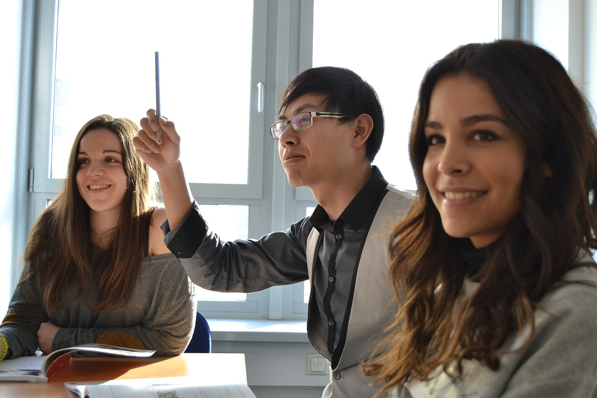
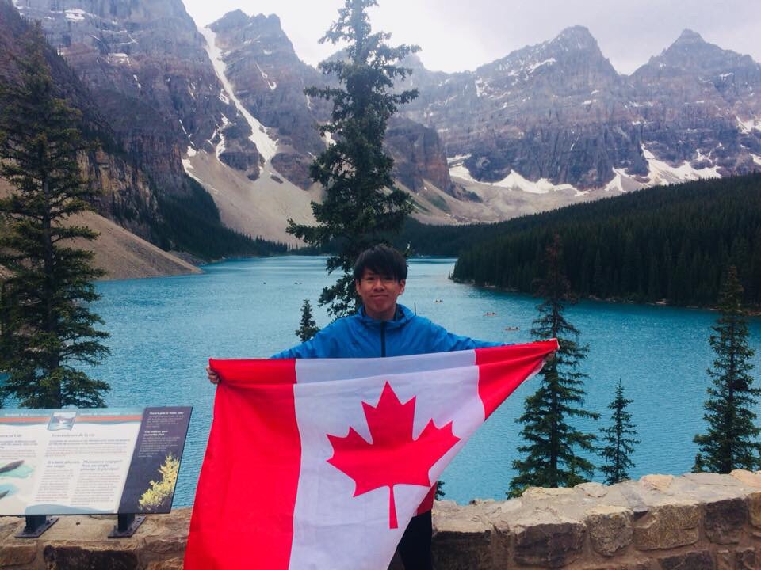
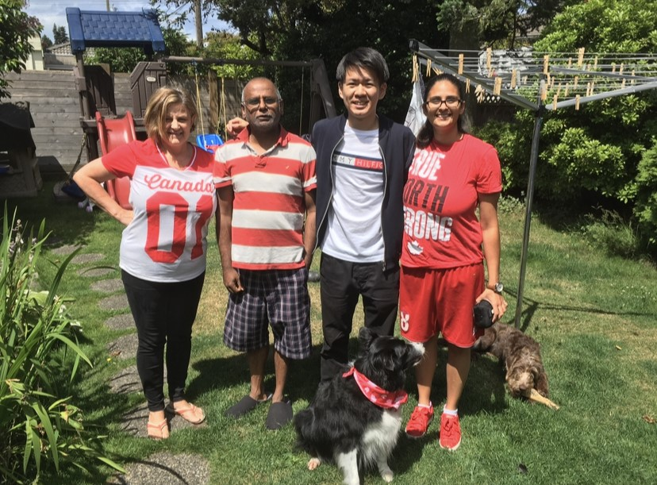
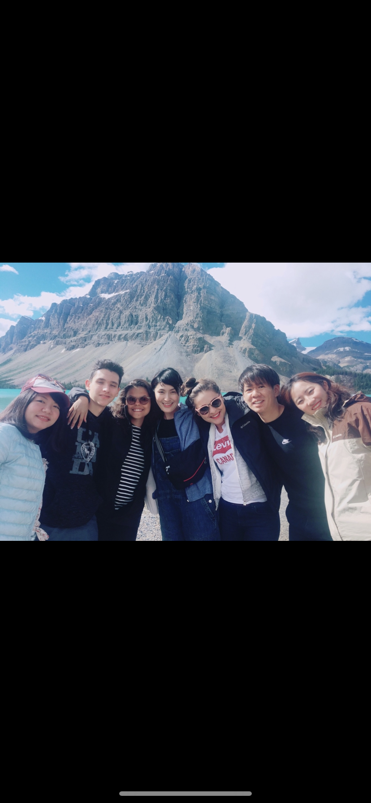
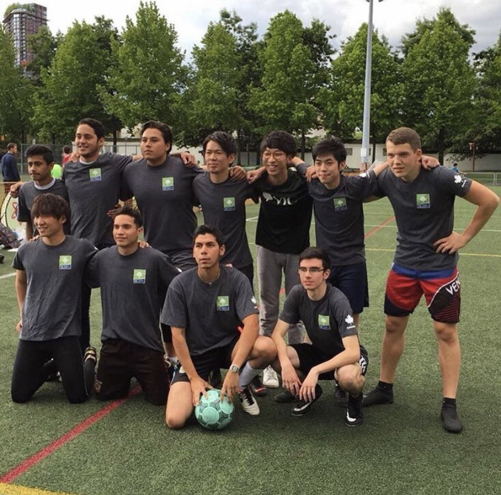
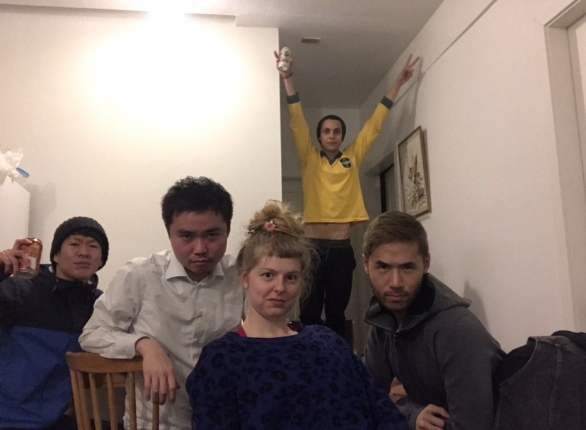
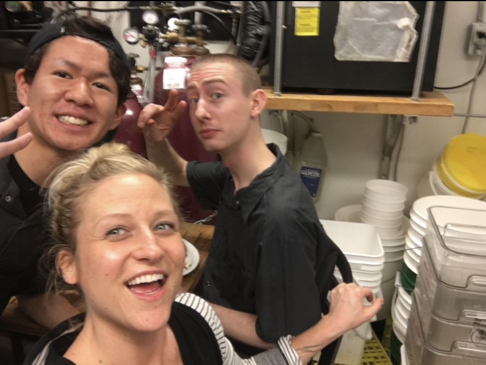

<!DOCTYPE html>
<html lang="ja">
  <head>
    <meta charset="UTF-8" />
    <link rel="stylesheet" href="css/reset.css" />
    <link rel="preconnect" href="https://fonts.gstatic.com" />
    <link rel="preconnect" href="https://fonts.gstatic.com" crossorigin />
    <link
      rel="stylesheet"
      href="https://fonts.googleapis.com/css2?family=Josefin+Sans&family=Sawarabi+Mincho&display=swap"
    />
    <link
      href="https://fonts.googleapis.com/css2?family=Noto+Sans+JP:wght@100..900&display=swap"
      rel="stylesheet"
    />
    <link rel="stylesheet" href="css/style.css" />
    <script src="main.js"></script>
    <title>Abroad experience</title>
  </head>
</html>
<body>
  <header>
    <div>
      <h1></h1>
      <h1></h1>
    </div>
    <h1></h1>
    <nav>
      <ul>
        <li><a href="#">留学の目的・目標</a></li>
        <li><a href="#">行きたい国</a></li>
        <li><a href="#">無料セミナー・説明会</a></li>
        <li><a href="#">選ばれる理由・実績</a></li>
        <li><a href="#">CONTACT</a></li>
      </ul>
    </nav>
  </header>
</body>
<main>
  <section class="bulletinboardSec">
    <div class="bulletinboard">
      <p>留学経験掲示板</p>
    </div>
  </section>
  <section class="middleSec" id="middlecontentstarea">
    <div class="innerwrap">
      <div class="contents_one">
        <div class="myselfimage">
          
        </div>
        <div class="introduction">
          <h1>井上　朋紀</h1>
          <h2><span> 留学先 : </span> バンクーバー/カナダ</h2>
          <h2><span> 期間 : </span>1年間</h2>
          <h2>
            <span>留学プラン : </span>語学学校(6か月)　＋　現地での就労(6か月)
          </h2>
          <h2>
            <span>目的 : </span>TOEICスコアup、日常英会話力修得、異文化理解
          </h2>
        </div>
      </div>
      <div class="contents_two">
        <h1>〇語学力</h1>
        <div class="subjects">
          <h2 class="before">留学前</h2>
          <h2 class="after">留学後</h2>
        </div>
        <div class="results">
          <h2 class="before">
            ・英語がスラスラ出てこない<br />
            ・TOEICスコア425点
          </h2>
          <span>→</span>
          <h2 class="after">
            ・円滑な日常英会話ができる<br />
            ・TOEICスコア835点
          </h2>
        </div>
      </div>
      <div class="contents_three">
        <h1>〇留学しようと思った理由</h1>
        <p>
          英語に興味を持ったきっかけは、高専3年生のときに参加した1週間のオーストラリア留学プログラムです。
          ホストファミリーや現地の学生と仲良くなり英語を話す楽しさを知った半面、
          「もっと英語力が高ければ色んな会話ができるのに...」と悔しい思いもこみ上げてきました。
          長期の留学で英語力はさらに伸ばせると思い、カナダのバンクーバーに1年間留学を決意しました。
        </p>
      </div>
      <div class="contents_four">
        <h1>〇バンクーバーを選んだ理由</h1>
        <p>
          バンクーバーを留学先として選んだ理由は2つあります。
          1つ目は世界有数の多国籍都市だからです。バンクーバーに行くだけで色んな国の人と出会い交流できるため、
          たくさんの異文化を学ぶことができると考えました。
          2つ目は自然が豊富で観光地もたくさんあるからです。英語を黙々と勉強するのであれば日本でもできますが、
          様々なアクティビティや自然に触れながら英語を学ぶことで活きた英語を学ぶことができると考えました。
        </p>
      </div>
      <div class="contents_five">
        <h1>□成果・得たこと</h1>
        <p>
          語学の面では日常会話が円滑にできる程度の英会話力を身に着けることができました。またTOEICのスコア
          では目標としていた800点を超えることができました。
          語学以外の面では他国の友人と交流を深め、その人独自の価値観や異文化に触れることができたため
          日本の文化との違いを感じました。異なる価値観を知ることができたため、今後の人生において問題解決や
          物事を考える際の参考にしたいと考えています。
        </p>
      </div>
      <div class="contents_fifth">
        <div class="timeline_subject"><h1>留学タイムライン</h1></div>

        <div class="timeline">
          <div class="timeline-item1">
            <div class="timeline-content">
              <h2>2018年4月</h2>
              <p>カナダ人のホストファミリー宅でホームステイを開始</p>
            </div>
            
          </div>
          <div class="timeline-item2">
            <div class="timeline-content">
              <h2>2018年6月</h2>
              <p>ロッキー山脈を巡るツアーに参加!</p>
              <p>友人との仲も深まりました。</p>
            </div>
            
          </div>
          <div class="timeline-item3">
            <div class="timeline-content">
              <h2>2018年8月～9月</h2>
              <p>語学学校対抗サッカー大会に出場!</p>
              <p>予選敗退となりましたが団結力が高まりました。</p>
            </div>
            
          </div>
          <div class="timeline-item4">
            <div class="timeline-content">
              <h2>2018年10月～</h2>
              <p>シェアハウス開始!</p>
              <p>週末のお酒パーティが何よりも楽しかったです。</p>
            </div>
            
          </div>
          <div class="timeline-item5">
            <div class="timeline-content">
              <h2>2018年11月～</h2>
              <p>カナディアン料理店でのアルバイト開始!</p>
              <p>
                日本人が自分だけという環境だったため英会話力がグングン伸びました。
              </p>
            </div>
            
          </div>
        </div>
      </div>
    </div>
  </section>

  <section class="contactSec" id="contactarea">
    <footer>
      <p><small>© Tomonori Inoue</small></p>
    </footer>
  </section>
</main>
